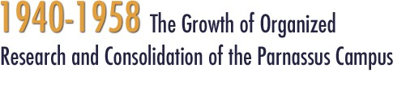
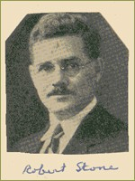
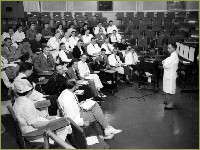
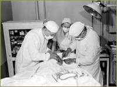
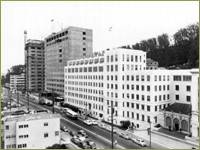
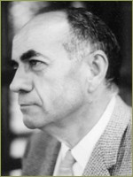
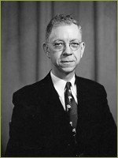
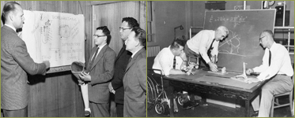
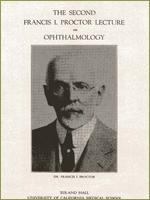

Research had been conducted at all the schools at Parnassus as well as Berkeley. Pharmacy faculty collaborated on projects involving sonar studies, night landings of naval aircraft, treatment of brain injuries, improving the production of high-yelding strains of Penicillium sp., and spectrographic analysis of metals. In the school of medicine K. F. Meyer lent his bacteriological expertise to the production of an effective plague vaccine. During the draft, dental defects were the leading cause for rejection for service, and the armed services lowered requirements and brought restorative dental care to thousands of recruits. This created political will for a federal dental research institution and the National Institute of Dental Research was created on September 16, 1948 as the third of the National Institutes of Health. Research in the etiology and mechanism of dental caries flourished in the post war years, and by 1962 tooth decay was characterized as disease caused by the interaction of diet and specific microorganisms.
In 1947 President Sproul appointed a Cancer Research Coordinating Committee to administer a $250,000 state appropriation for cancer research. Federal funding arrived for cancer research in California by 1947 and a mouse colony for cancer research genetics was built on the Berkeley campus. At UCLA, a fully-funded Cancer Research Institute was opened along with a new school of medicine. San Francisco received funding for its own Cancer Research institute. A "field station" for cancer research, the Laboratory of Experimental Oncology, was located at the Laguna Honda Hospital and staffed by Public Health Services officers who worked alongside UC faculty to do
This facility was closed when the NIH opened its Clinical Center at Bethesda in the mid 1950s, but cancer research at San Francisco continued under the aegis of the Cancer Research Institute which continued to coordinate chemotherapy trials and research projects. Eventually the CRI occupied the twelfth floor of the new Medical Sciences building, outfitted for cancer research with the aid of a $1 million grant from the US Public Health Service.
He persuaded the legislature to provide an additional $50,000 to strengthen the foundations of the hospital to accommodate an additional thirteenth floor, hoping to clear the way for an entire floor devoted to heart research. In the late 1940s, Dean of the School of Medicine, Francis Smyth, organized a committee with representatives from Medicine, Surgery, Radiology and Pediatrics to develop cardiac catheterization at San Francisco.
When the new drug was evaluated at the Brigham lab, Dr. Bennett saw its remarkable therapeutic effects firsthand. When he returned the next year to California, the state legislature made a special appropriation of $200,000 to the University of California for research in arthritis and allied diseases and Dr. Bennett took charge of the project, remodeling two houses on Parnassus Avenue to serve as a site for his new Metabolic Research Unit.
In 1947 Mrs. Francis I. Proctor, widow of an ophthalmologist who had been active in trachoma research before his death, established the Proctor Foundation for Research in Ophthalmology at San Francisco. The Proctor's research program brought Parnassus microbiologists and ophthalmologists together in the study of ocular microbiology, immunology and experimental pathology.
>> Reconsolidation of Medical Instruction at Parnassus
Postwar Research Initiatives
The war effort prompted new initiatives in scientific research which were organized on a massive scale. In the 1930s Congress created a National Institute of Health (NIH) from the former Hygienic Laboratory of the US Public Health Service. During the war, federal programs in medical research were organized loosely by a Committee on Medical Research (CMR) which administered research grants involving malaria research, evaluation and production of penicillin, new surgical procedures, mental health and aviation medicine. At war's end, the CMR converted wartime grants into ongoing grants in aid and positioned the NIH to become the principal federal funding agency for medical research in the postwar period. Research had been conducted at all the schools at Parnassus as well as Berkeley. Pharmacy faculty collaborated on projects involving sonar studies, night landings of naval aircraft, treatment of brain injuries, improving the production of high-yelding strains of Penicillium sp., and spectrographic analysis of metals. In the school of medicine K. F. Meyer lent his bacteriological expertise to the production of an effective plague vaccine. During the draft, dental defects were the leading cause for rejection for service, and the armed services lowered requirements and brought restorative dental care to thousands of recruits. This created political will for a federal dental research institution and the National Institute of Dental Research was created on September 16, 1948 as the third of the National Institutes of Health. Research in the etiology and mechanism of dental caries flourished in the post war years, and by 1962 tooth decay was characterized as disease caused by the interaction of diet and specific microorganisms.

Robert Stone, former chair of radiology at the San Francisco Medical School served on the Manhattan Project throughout the war years and was well-placed to direct research funding from the Atomic Energy Commission (AEC) to the San Francisco campus after the war. Radiology research at San Francisco grew out of the earlier work in medical physics done with cyclotron-produced isotopes before the war. In 1949, under contract with the AEC, a Radiological Laboratory was established to allow Dr. Stone to investigate the effects of supervolt radiation therapy for cancer. Funded by an annual contract with the AEC, a seventy million volt synchrotron was installed at Parnassus and the radiological laboratory combined physics, biology, and clinical radiology to study the general effects of radiation. In 1951 a Radioactivity Research Center was founded for supervision of the radioisotopes used for medical research at San Francisco, funded with a combination of university, American Cancer Society, Atomic Energy Commission, and NIH money.
Robert Stone
Cancer Research

Dr. Robert Stone was also appointed at war's end to an influential federal planning committee for cancer research and collaborated with UC President Robert Sproul and medical school Dean Francis Smyth about funding opportunities.
The Consultative Tumor board, pictured discussing cancer cases at Parnassus, ca. 1952.
In 1947 President Sproul appointed a Cancer Research Coordinating Committee to administer a $250,000 state appropriation for cancer research. Federal funding arrived for cancer research in California by 1947 and a mouse colony for cancer research genetics was built on the Berkeley campus. At UCLA, a fully-funded Cancer Research Institute was opened along with a new school of medicine. San Francisco received funding for its own Cancer Research institute. A "field station" for cancer research, the Laboratory of Experimental Oncology, was located at the Laguna Honda Hospital and staffed by Public Health Services officers who worked alongside UC faculty to do

experiments on the biology of cancer and to test cancer treatments on terminally-ill patients.
Dr. R. L. Byron performs a biopsy on a subcutaneous nodule of a cancer patient, assisted by Dr. K. H. Kelly and Mrs. Anna Lance.
This facility was closed when the NIH opened its Clinical Center at Bethesda in the mid 1950s, but cancer research at San Francisco continued under the aegis of the Cancer Research Institute which continued to coordinate chemotherapy trials and research projects. Eventually the CRI occupied the twelfth floor of the new Medical Sciences building, outfitted for cancer research with the aid of a $1 million grant from the US Public Health Service.
Cardiovascular Research
Although he never sat on influential Washington committees, UC's Chair of Medicine, Dr. William J. Kerr, influenced the outcome of federal research funding at San Francisco through his insistence on developing research space in the new Moffitt Hospital during the extended planning stages of the 1940s.
He persuaded the legislature to provide an additional $50,000 to strengthen the foundations of the hospital to accommodate an additional thirteenth floor, hoping to clear the way for an entire floor devoted to heart research. In the late 1940s, Dean of the School of Medicine, Francis Smyth, organized a committee with representatives from Medicine, Surgery, Radiology and Pediatrics to develop cardiac catheterization at San Francisco.

This committee received one of the first National Heart Institute training grants and renamed itself the Cardiovascular Board, acting as a coordinating force for developing cardiovascular activities on the campus. The most important of these involved creation of an interdisciplinary, interdepartmental research group devoted to the study of cardiovascular, pulmonary and renal problems.
Moffitt Hospital under construction

Dr. Julius Comroe was recruited in 1957 to direct this new Cardiovascular Research Institute (CVRI). When the CVRI opened in 1958 it featured eight clinical research beds, radiological facilities, twenty-two individual labs, a mechanical and electronics shop, dark rooms and animal quarters. Julius Comroe proved to be an excellent leader, persuading entire teams of researchers to relocate to San Francisco, recruiting new investigators, and involving manWy departments of the school in collaborative research.
Julius Comroe
Metabolic Research
Another research opportunity was based on public enthusiasm for study of the uses of the new drug, cortisone. In 1949 Merck sent its first experimental batches of the hormone to selected investigators throughout the country. At that time UC had no laboratory capable of doing such work, but by coincidence during that same year UC Medical School faculty physiologist, Dr. Leslie Bennett, was just beginning a year's sabbatical in clinical metabolic research in George Thorn's research lab at the Peter Bent Brigham Hospital at Harvard.
When the new drug was evaluated at the Brigham lab, Dr. Bennett saw its remarkable therapeutic effects firsthand. When he returned the next year to California, the state legislature made a special appropriation of $200,000 to the University of California for research in arthritis and allied diseases and Dr. Bennett took charge of the project, remodeling two houses on Parnassus Avenue to serve as a site for his new Metabolic Research Unit.

Meanwhile on the Berkeley campus a Hormone Research Laboratory was created as a discrete research site for the work of Dr. Cho Hao Li, who had synthesized many related ACTH compounds. In response to the rapid development of metabolic and hormone studies throughout the nation, an additional National Institute was created in 1950 at Bethesda: the National Institute of Arthritis and Metabolic Diseases (NIAMD). Some of the postwar research activities at the UC Medical School were funded from a variety of state and local donors and foundations attracted to individual faculty capabilities. One of the first of these was the Biomechanics Laboratory, a collaborative unit set up in 1945 by Berkeley engineers and San Francisco anatomists and orthopedic surgeons.
Dr. Leslie Bennett

Biomechanics Laboratory

The Biomechanics Lab had been initially funded by the Polio Foundation for research into muscle action and physiology, but with the coming of war the research was shifted to work on development of prosthetic devices for veterans. A related pain clinic was organized at San Francisco to study ghost pain and other problems of amputees.
Dr. Francis I. Proctor
In 1947 Mrs. Francis I. Proctor, widow of an ophthalmologist who had been active in trachoma research before his death, established the Proctor Foundation for Research in Ophthalmology at San Francisco. The Proctor's research program brought Parnassus microbiologists and ophthalmologists together in the study of ocular microbiology, immunology and experimental pathology.
>> Reconsolidation of Medical Instruction at Parnassus
{% include footer.html %}